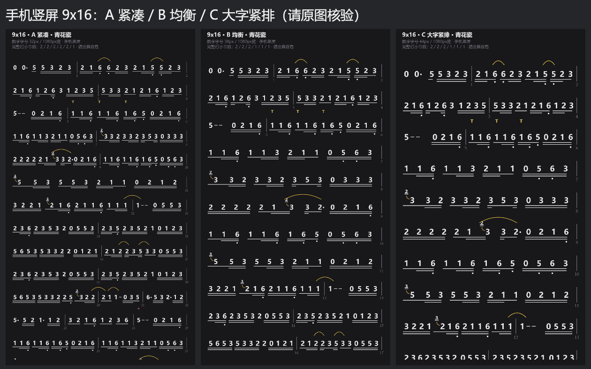
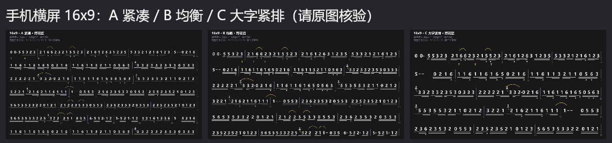
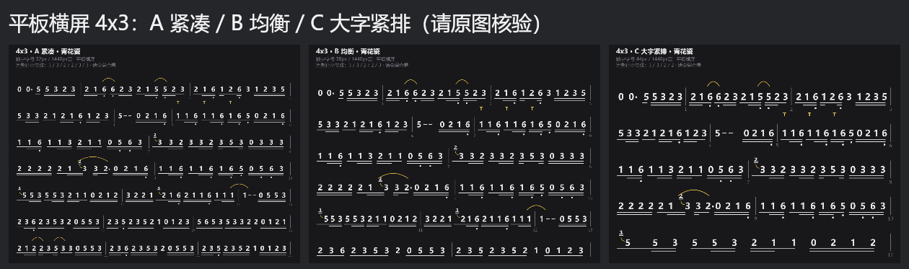
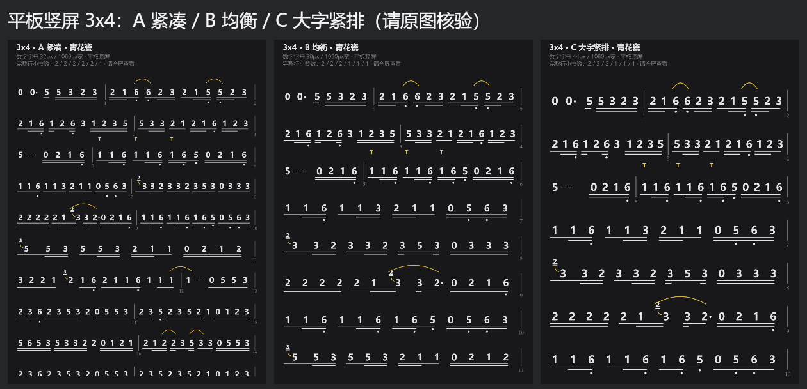
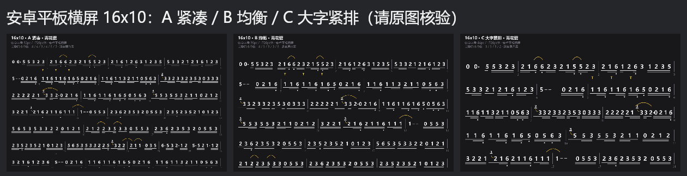
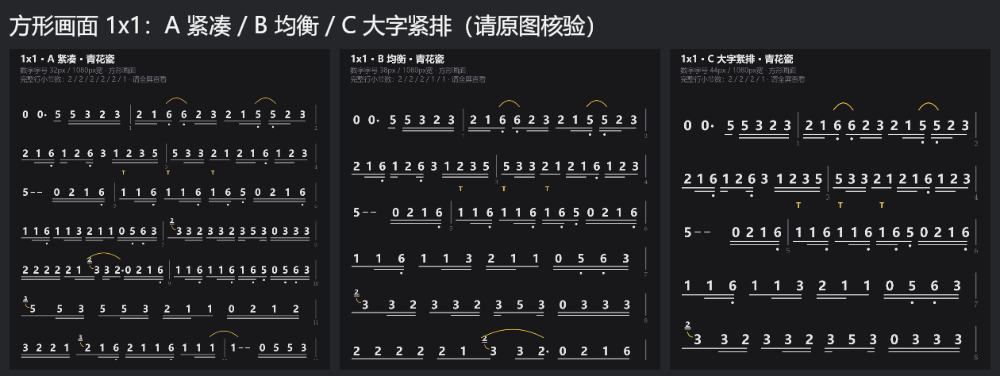

以《青花瓷》的真实简谱绘制。每种比例有 A 紧凑、B 均衡、C 大字；B 另有浅色版。样张只用于选择，不修改软件的默认配置。
请将单张 PNG 原图保存到手机或平板，横竖方向与文件对应，隐藏查看器工具条，先适应屏幕查看，不要放大。比较图只便于初选，三栏缩略图不能判断真实字号。数字字号是成品像素值，不是设备上的毫米大小。






请记录设备型号、屏幕尺寸、查看方向、配置编号，例如：手机竖屏 9x16-B，平板横屏 4x3-C。再说明音符、八度点、减时线、倚音是否清楚，间距是否拥挤，每行信息量是否足够。密集乐句可能自然只有一个小节；不应为了固定小节数把字号压得无法阅读。最终可按设备选择配置，而非强制所有比例共用一个布局。